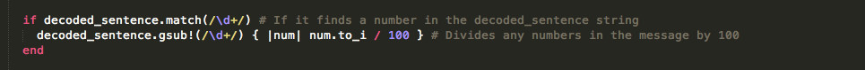
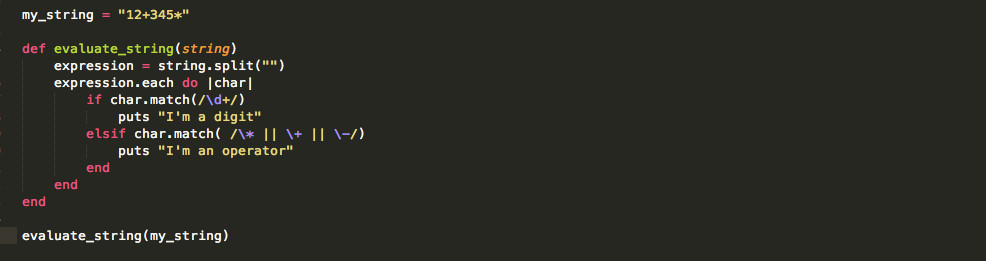
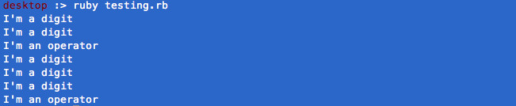

An Overview of Regular Expressions
October 16, 2014
This week we're being asked to write about one of the technical topics that we haven't covered in Phase 0. One of the suggestions was Regular Expressions, and since it's been on my list of things I want to learn about for some time now, that's the topic I'll cover in this week's technical blog.
I can't cover everything about Regular Expressions, or RegExp, in the hour or so that we are supposed to allot for each blog entry, so I'll try to paint a broad picture of how it works and what it does, as well as provide some examples and resources for further research.
What is RexExp?
In short, RegExp is a way to find patterns in text, like a super fancy find and replace function. RegExp commands are a system of basic blocks that can be used to find and manipulate information in a block of text. Regular Expression is what is says, an expression of text or numbers that appear in your code, data, or document.
Unlike a normal search and replace function that you would find in a text editor, you can use RegExp to alter info in very customized ways. A very simple example of this is a case where you might want to to change the year in a set of database records, but only for a given month. A normal find/replace tool won't do this. It would change all of the instances of the year found in the data. Additionally, we can specify that we want to replace something at the beginning of a word, the end of a word, a word by itself, or only a word that appears more than x number of times in a sentence, document, paragraph, etc.
How can I use RegExp in my code?
Regexp is incorporated into most programming languages including Ruby and Javascript. There is some variation in the way it's invoked but overall the syntax is similar across languages. There are many ways that Regexp can be useful in Ruby, and I don't know what most of them are yet. Here are a few simple examples of how we have seen it used and could use it in the work we've done so far.
Week 4: Cipher Exercise
The code snippet below checks to see if a character in the decoded_sentence array is a number, and if it is, it divides that all instances of that number by 100 and substitutes them.
First, we call the .match method on the array. In the parameters for the method, we are telling the method to look for digits, denoted by \d. The // characters denote a regexp expression, and the + means that we are looking for one or more digits in a row. The parameters for the second method are the same. Here, we're telling Ruby to substitute all of these digits with the same digit divided by 100.
Week 5 Bonus: Reverse Polish Notation
In this exercise, we had to evaluate a string and output its evaluation in reverse polish notation(link). In order to do this, we had to evaluate whether the characters in the string were numbers or operators, and tell the code to do different things based on this information.
The code below shows a very simplified version of how to do this using Regular Expressions. After I split the original input string into an array, I then look at each element and evaluate it according to whether it matches a pattern I've specified using Regexp. First, I look to see if the element is a digit, using the .match method and the notation for a digit. This is the same thing we did above in the cipher example. Next, I check to see if the element matches the multiplication, addition, or subtraction operators. I do this by specifying each operator in my notation, separated by the || or operator. Notice that I use the backslash/escape character, so that the operators will be read as text and not as actual operators. Also notice that because all of the operators are being evaluated together, I only have one set of // characters.
Terminal Output:
It looks really complicated - How do I learn and use RegExp?
Regexp is somewhat complicated and hard to interpret. The best way to learn it, according to what I have read, is to think about what you are trying to find/match in plain English, and then break it down to small parts of a Regexp expression. Sound familiar?
Resources
The Bastards Book of Regular Expressions
This book can be downloaded for free, but it's well worth the suggested $4.99 donation if you're interested in taking some time to read about RegExp.
Rubular
An app for editing and testing regexes in Ruby.
Scriptular
An app for editing and testing regexes in Javascript.
Regular-Expressions.info Quick Start Guide
A very brief overview of Regular Expressions.
RegExLib.com Regular Expression Cheat Sheet
Cheatography Regular Expressions Cheat Sheet